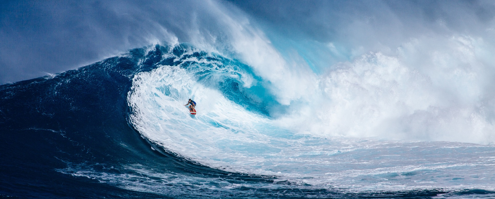

Hawii
I have always like the idea of living on an island. Besides bad weather sometimes it would be an amzing place to visit. My sister went there and said she had the time of her life and even swam with friendly sharks. Since then I have always had a passion to go there and just soak up the sun and maybe even catch some fat fish while I am there.
The fishing here would be off the charts. I would spend a lot of time fishing because I really enojoy doing things like that. I am sure there are many fishing cruises you could take and even fishing off shore I would feel had a chance to catch the big ones.